산업보건지도사 (2020-07-25 기출문제)
1과목: 산업안전보건법령
1. 산업안전보건법령상 협조 요청 등에 관한 설명으로 옳지 않은 것은?
- 고용노동부장관은 산업재해 예방에 관한 기본계획을 효율적으로 시행하기 위하여 필요하다고 인정할 때에는 관계 행정기관의 장에게 필요한 협조를 요청할 수 있다.
- 고용노동부를 제외한 행정기관의 장은 사업장의 안전에 관하여 규제를 하려면 미리 고용노동부장관과 협의하여야 한다.
- 고용노동부를 제외한 행정기관의 장은 고용노동부장관이 협의과정에서 해당 규제에 대한 변경을 요구하면 이에 따라야 하며, 고용노동부장관은 필요한 경우국무총리에게 협의ㆍ조정 사항을 보고하여 확정할 수 있다.
- 고용노동부장관은 산업재해 예방을 위하여 필요하다고 인정할 때에는 사업주에게 필요한 사항을 권고할 수 있다.
- 고용노동부장관이 산정ㆍ통보한 산업재해발생률에 불복하는 건설업체는 통보를 받은 날부터 15일 이내에 고용노동부장관에게 이의를 제기하여야 한다.
(정답률: 알수없음)

2. 산업안전보건법령상 산업재해발생건수등의 공표에 관한 설명으로 옳지 않은 것은?
- 고용노동부장관은 산업재해를 예방하기 위하여 사망재해자가 연간 2명 이상 발생한 사업장의 산업재해발생건수등을 공표하여야 한다.
- 고용노동부장관은 산업재해를 예방하기 위하여 중대산업사고가 발생한 사업장의 산업재해발생건수등을 공표하여야 한다.
- 고용노동부장관은 도급인의 사업장 중 대통령령으로 정하는 사업장에서 관계 수급인 근로자가 작업을 하는 경우에 도급인의 산업재해발생건수등에 관계수급인의 산업재해발생건수등을 포함하여 공표하여야 한다.
- 산업재해발생건수등의 공표의 절차 및 방법에 관한 사항은 대통령령으로 정한다.
- 고용노동부장관은 산업재해발생건수등을 공표하기 위하여 도급인에게 관계수급인에 관한 자료의 제출을 요청할 수 있다.
(정답률: 알수없음)
3. 산업안전보건법령상 안전보건표지에 관한 설명으로 옳지 않은 것은?
- 안전보건표지의 표시를 명확히 하기 위하여 필요한 경우에는 그 안전보건표지의 주위에 표시사항을 흰색 바탕에 검은색 한글고딕체로 표기한 글자로 덧붙여 적을 수 있다.
- 사업주는 사업장에 설치한 안전보건표지의 색도기준이 유지되도록 관리해야 한다.
- 안전보건표지의 성질상 부착하는 것이 곤란한 경우에도 해당 물체에 직접 도색할 수 없다.
- 안전보건표지 속의 그림의 크기는 안전보건표지 전체 규격의 30 퍼센트 이상이 되어야 한다.
- 안전보건표지는 쉽게 변형되지 않는 재료로 제작해야 한다.
(정답률: 알수없음)
4. 산업안전보건법령상 안전보건관리책임자의 업무에 해당하는 것을 모두 고른 것은?
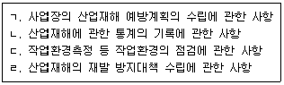
- ㄱ, ㄴ, ㄷ
- ㄱ, ㄴ, ㄹ
- ㄱ, ㄷ, ㄹ
- ㄴ, ㄷ, ㄹ
- ㄱ, ㄴ, ㄷ, ㄹ
(정답률: 알수없음)
5. 산업안전보건법령상 안전관리자에 관한 설명으로 옳지 않은 것은?
- 사업의 종류가 건설업(공사금액 150억원)인 경우, 그 사업주는 사업장에 안전관리자를 두어야 한다.
- 대통령령으로 정하는 사업의 종류 및 사업장의 상시근로자 수에 해당하는 사업장의 사업주는 안전관리전문기관에 안전관리자의 업무를 위탁할 수 있다.
- 사업주가 안전관리자를 배치할 때에는 연장근로ㆍ야간근로 등 해당 사업장의 작업 형태를 고려해야 한다.
- 사업주는 안전관리자를 선임한 경우에는 고용노동부령으로 정하는 바에 따라 선임한 날부터 7일 이내에 고용노동부장관에게 그 사실을 증명할 수 있는 서류를 제출해야 한다.
- 고용노동부장관은 산업재해 예방을 위하여 필요한 경우로서 고용노동부령으로 정하는 사유에 해당하는 경우에는 사업주에게 안전관리자를 대통령령으로 정하는 수 이상으로 늘릴 것을 명할 수 있다.
(정답률: 80%)
6. 산업안전보건법령상 산업안전보건위원회에 관한 설명으로 옳지 않은 것은?
- 산업안전보건위원회는 근로자위원과 사용자위원을 같은 수로 구성ㆍ운영하여야 한다.
- 산업안전보건위원회의 위원장은 위원 중에서 고용노동부장관이 정한다.
- 산업안전보건위원회는 단체협약, 취업규칙에 반하는 내용으로 심의ㆍ의결해서는 아니 된다.
- 사업주는 산업안전보건위원회의 위원에게 직무 수행과 관련한 사유로 불리한 처우를 해서는 아니 된다.
- 산업안전보건위원회의 회의는 근로자위원 및 사용자위원 각 과반수의 출석으로 개의(開議)하고 출석위원 과반수의 찬성으로 의결한다.
(정답률: 알수없음)
7. 산업안전보건법령상 안전보건관리규정에 관한 설명으로 옳은 것은?
- '안전보건교육에 관한 사항'은 안전보건관리규정에 포함되지 않는다.
- 상시근로자 수가 100명인 금융업의 경우 안전보건관리규정을 작성해야 한다.
- 사업주가 안전보건관리규정을 작성할 때에는 소방ㆍ가스ㆍ전기ㆍ교통 분야 등의 다른 법령에서 정하는 안전관리에 관한 규정과 통합하여 작성할 수 있다.
- 산업안전보건위원회가 설치되어 있지 아니한 사업장의 사업주가 안전보건관리 규정을 변경할 경우 근로자대표의 동의를 받지 않아도 된다.
- 사업주는 안전보건관리규정을 작성해야 할 사유가 발생한 날부터 15일 이내에 이를 작성해야 한다.
(정답률: 알수없음)
8. 산업안전보건법령상 도급의 승인 등에 관한 설명으로 옳은 것을 모두 고른 것은?
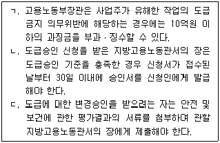
- ㄱ
- ㄴ
- ㄷ
- ㄱ, ㄷ
- ㄴ, ㄷ
(정답률: 알수없음)
9. 산업안전보건법령상 도급인의 안전조치 및 보건조치 등에 관한 설명으로 옳은 것은?
- 관계수급인 근로자가 도급인의 토사석 광업 사업장에서 작업을 하는 경우 도급인은 1주일에 1회 작업장 순회점검을 실시하여야 한다.
- 도급인은 관계수급인 근로자의 산업재해 예방을 위해 보호구 착용 지시 등 관계 수급인 근로자의 작업행동에 관한 직접적인 조치도 포함하여 필요한 안전조치를 하여야 한다.
- 안전 및 보건에 관한 협의체는 회의를 분기별 1회 정기적으로 개최하여야 한다.
- 관계수급인 근로자가 도급인의 사업장에서 작업하는 경우 도급인은 위생시설 등 고용노동부령으로 정하는 시설의 설치 등을 위하여 필요한 장소의 제공 또는 도급인이 설치한 위생시설 이용의 협조를 이행하여야 한다.
- 도급에 따른 산업재해 예방조치의무에 따라 도급인이 작업장의 안전 및 보건에 관한 합동점검을 할 때에는 도급인, 관계수급인, 도급인 및 관계수급인의 근로자 각 2명으로 점검반을 구성하여야 한다.
(정답률: 알수없음)
10. 산업안전보건법령상 안전보건관리담당자는 고용노동부장관이 실시하는 안전보건에 관한 보수교육을 최소 몇 시간 이상 받아야 하는가? (단, 보수교육의 면제사유 등은 고려하지 않음)
- 4시간
- 6시간
- 8시간
- 24시간
- 34시간
(정답률: 알수없음)
11. 산업안전보건법령상 관리감독자의 지위에 있는 근로자 A에 대하여 근로자 정기교육시간을 면제할 수 있는 경우를 모두 고른 것은?
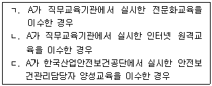
- ㄱ
- ㄱ, ㄴ
- ㄱ, ㄷ
- ㄴ, ㄷ
- ㄱ, ㄴ, ㄷ
(정답률: 알수없음)
12. 산업안전보건법령상 유해ㆍ위험 기계 등에 대한 방호조치 등에 관한 설명으로 옳지 않은 것은?
- 금속절단기와 예초기에 설치해야 할 방호장치는 날접촉 예방장치이다.
- 작동부분에 돌기부분이 있는 기계는 작동부분의 돌기부분을 묻힘형으로 하거나 덮개를 부착하여야 한다.
- 회전기계에 물체 등이 말려 들어갈 부분이 있는 기계는 회전기계의 물림점에 덮개 또는 방호망을 설치하여야 한다.
- 동력전달 부분이 있는 기계는 동력전달부분에 덮개를 부착하거나 방호망을 설치하여야 한다.
- 지게차에 설치해야 할 방호장치는 헤드 가드, 백레스트(backrest), 전조등, 후미 등, 안전벨트이다.
(정답률: 알수없음)
13. 산업안전보건법령상 대여 공장건축물에 대한 조치의 내용이다. ( )에 들어갈 내용이 옳은 것은?
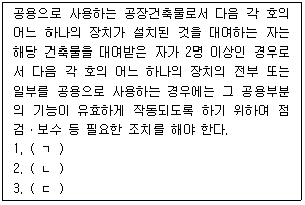
- ㄱ: 국소 배기장치, ㄴ: 국소 환기장치, ㄷ: 배기처리장치
- ㄱ: 국소 배기장치, ㄴ: 전체 환기장치, ㄷ: 배기처리장치
- ㄱ: 국소 환기장치, ㄴ: 전체 환기장치, ㄷ: 국소 배기장치
- ㄱ: 국소 환기장치, ㄴ: 환기처리장치, ㄷ: 전체 환기장치
- ㄱ: 환기처리장치, ㄴ: 배기처리장치, ㄷ: 국소 환기장치
(정답률: 알수없음)
14. 산업안전보건법령상 안전인증과 안전검사에 관한 설명으로 옳지 않은 것은?
- 「화학물질관리법」에 따른 수시검사를 받은 경우 안전검사를 면제한다.
- 산업용 원심기는 안전검사대상기계등에 해당된다.
- 프레스와 압력용기는 고용노동부장관이 실시하는 안전인증과 안전검사를 모두 받아야 한다.
- 고용노동부장관은 안전인증을 받은 자가 안전인증기준을 지키고 있는지를 3년 이하의 범위에서 고용노동부령으로 정하는 주기마다 확인하여야 한다.
- 안전검사 신청을 받은 안전검사기관은 검사 주기 만료일 전후 각각 30일 이내에 해당 기계ㆍ기구 및 설비별로 안전검사를 하여야 한다.
(정답률: 알수없음)
15. 산업안전보건기준에 관한 규칙 제662조(근골격계질환 예방관리 프로그램 시행) 제1항 규정의 일부이다. ( )에 들어갈 숫자가 옳은 것은?
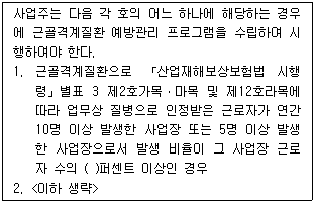
- 5
- 10
- 20
- 30
- 50
(정답률: 알수없음)
16. 산업안전보건기준에 관한 규칙의 내용으로 옳지 않은 것은?
- 사업주는 순간풍속이 초당 10 미터를 초과하는 바람이 불어올 우려가 있는 경우 옥외에 설치된 주행 크레인에 대하여 이탈방지를 위한 조치를 하여야 한다.
- 사업주는 순간풍속이 초당 15 미터를 초과하는 경우에는 타워크레인의 운전 작업을 중지하여야 한다.
- 사업주는 높이가 3 미터를 초과하는 계단에 높이 3 미터 이내마다 너비 1.2 미터 이상의 계단참을 설치하여야 한다.
- 사업주는 높이 1 미터 이상인 계단의 개방된 측면에 안전난간을 설치하여야 한다.
- 사업주는 연면적이 400 제곱미터 이상이거나 상시 50명 이상의 근로자가 작업하는 옥내작업장에는 비상시에 근로자에게 신속하게 알리기 위한 경보용 설비 또는 기구를 설치하여야 한다.
(정답률: 알수없음)
17. 산업안전보건법령상 유해인자의 유해성ㆍ위험성 분류기준에 관한 설명으로 옳지 않은 것은?
- 인화성 액체는 표준압력(101.3 kPa)에서 인화점이 93 ℃ 이하인 액체이다.
- 54 ℃ 이하 공기 중에서 자연발화하는 가스는 인화성 가스에 해당한다.
- 20 ℃, 200 킬로파스칼(kPa) 이상의 압력 하에서 용기에 충전되어 있는 가스는 고압가스에 해당한다.
- 유기과산화물은 2가의 －○－○－ 구조를 가지고 3개의 수소원자가 유기라디칼에 의하여 치환된 과산화수소의 유도체를 포함한 액체 유기물질이다.
- 자연발화성 액체는 적은 양으로도 공기와 접촉하여 5분 안에 발화할 수 있는 액체이다.
(정답률: 알수없음)
18. 산업안전보건법령상 유해인자별 노출 농도의 허용기준과 관련하여 단시간 노출값의 내용이다. ( )에 들어갈 숫자가 순서대로 옳은 것은?
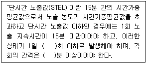
- 4, 30
- 4, 60
- 5, 30
- 5, 60
- 6, 60
(정답률: 알수없음)
19. 산업안전보건법령상 고용노동부장관이 작업환경측정기관에 대하여 그 지정을 취소하거나 6개월 이내의 기간을 정하여 그 업무의 정지를 명할 수 있는 경우가 아닌 것은?
- 작업환경측정 관련 서류를 거짓으로 작성한 경우
- 정당한 사유 없이 작업환경측정 업무를 거부한 경우
- 위탁받은 작업환경측정 업무에 차질을 일으킨 경우
- 작업환경측정 업무와 관련된 비치서류를 보존하지 않은 경우
- 고용노동부장관이 실시하는 작업환경측정기관의 측정ㆍ분석능력 확인을 6개월 동안 받지 않은 경우
(정답률: 알수없음)
20. 산업안전보건법령상 일반건강진단의 주기에 관한 내용이다. ( )에 들어갈 숫자가 순서대로 옳은 것은?
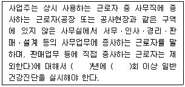
- 1, 1
- 1, 2
- 2, 1
- 2, 2
- 3, 2
(정답률: 알수없음)
21. 산업안전보건법령상 사업주가 질병자의 근로를 금지해야 하는 대상에 해당하지 않는 사람은?
- 조현병에 걸린 사람
- 마비성 치매에 걸릴 우려가 있는 사람
- 신장 질환이 있는 사람으로서 근로에 의하여 병세가 악화될 우려가 있는 사람
- 심장 질환이 있는 사람으로서 근로에 의하여 병세가 악화될 우려가 있는 사람
- 폐 질환이 있는 사람으로서 근로에 의하여 병세가 악화될 우려가 있는 사람
(정답률: 알수없음)
22. 산업안전보건법령상 교육기관의 지정 등에 관한 설명으로 옳지 않은 것은?
- 고용노동부장관은 유해하거나 위험한 작업으로서 상당한 지식이나 숙련도가 요구되는 고용노동부령으로 정하는 작업의 경우, 그 작업에 필요한 자격ㆍ면허의 취득 또는 근로자의 기능 습득을 위하여 교육기관을 지정할 수 있다.
- 교육기관의 지정 요건 및 지정 절차는 고용노동부령으로 정한다.
- 고용노동부장관은 지정받은 교육기관이 거짓으로 지정을 받은 경우에는 그 지정을 취소하여야 한다.
- 고용노동부장관은 지정받은 교육기관이 업무정지 기간 중에 업무를 수행한 경우에는 그 지정을 취소하여야 한다.
- 교육기관의 지정이 취소된 자는 지정이 취소된 날부터 3년 이내에는 해당 교육기관으로 지정받을 수 없다.
(정답률: 알수없음)
23. 산업안전보건법령상 근로감독관 등에 관한 설명으로 옳지 않은 것은?
- 근로감독관은 이 법을 시행하기 위하여 필요한 경우 석면해체ㆍ제거업자의 사무소에 출입하여 관계인에게 관계 서류의 제출을 요구할 수 있다.
- 근로감독관은 산업재해 발생의 급박한 위험이 있는 경우 사업장에 출입하여 관계인에게 관계 서류의 제출을 요구할 수 있다.
- 근로감독관은 기계ㆍ설비등에 대한 검사에 필요한 한도에서 무상으로 제품ㆍ원재료 또는 기구를 수거할 수 있다.
- 지방고용노동관서의 장은 근로감독관이 이 법에 따른 명령의 시행을 위하여 관계인에게 출석명령을 하려는 경우, 긴급하지 않는 한 14일 이상의 기간을 주어야 한다.
- 근로감독관은 이 법을 시행하기 위하여 사업장에 출입하는 경우에 그 신분을 나타내는 증표를 지니고 관계인에게 보여 주어야 한다.
(정답률: 알수없음)
24. 산업안전보건법령상 산업안전지도사로 등록한 A가 손해배상의 책임을 보장하기 위하여 보증보험에 가입해야 하는 경우, 최저 보험금액이 얼마 이상인 보증보험에 가입해야 하는가? (단, A는 법인이 아님)
- 1천만원
- 2천만원
- 3천만원
- 4천만원
- 5천만원
(정답률: 알수없음)
25. 산업안전보건법령상 산업재해 예방활동의 보조ㆍ지원을 받은 자의 폐업으로 인해 고용노동부장관이 그 보조ㆍ지원의 전부를 취소한 경우, 그 취소한 날부터 보조ㆍ지원을 제한할 수 있는 기간은?
- 1년
- 2년
- 3년
- 4년
- 5년
(정답률: 알수없음)
2과목: 산업보건일반
26. 산업보건위생의 역사에 관한 설명으로 옳지 않은 것은?
- 영국의 Thomas Percival은 세계 최초로 직업성 암을 보고하였다.
- 1833년 영국에서 공장법이 제정되었다.
- 이탈리아 Ramazzini가 ≪직업인의 질병≫을 저술하였다.
- 스위스 Paracelsus가 물질 독성의 양-반응 관계에 대해 언급하였다.
- 그리스의 Galen이 납중독의 증세를 관찰하였다.
(정답률: 알수없음)
27. '페인트가 칠해진 철제 교량을 용접을 통해 보수하는 작업'에 대한 측정 및 분석 계획에 관한 설명으로 옳지 않은 것은?
- 철 이외에 다른 금속에 노출될 수 있다.
- 금속의 성분 분석을 위해서 셀룰로오스에스테르 막여과지를 사용해 측정한다.
- 유도결합플라스마-원자발광분석기를 이용하면 동시에 많은 금속을 분석할 수 있다.
- 페인트가 녹아 발생하는 유기용제의 농도가 높기 때문에 이를 측정대상에 포함한다.
- 발생하는 자외선량은 전류량에 비례한다.
(정답률: 알수없음)
28. 국소배기장치의 점검에 사용되는 기기와 그 사용 목적의 연결이 옳은 것은?
- 발연관 - 덕트 내 유량 측정
- 마노메타(manometer) - 유체 흐름에 대한 압력 측정
- 피토관 - 송풍기의 회전속도 측정
- 회전날개풍속계 - 개구부 주위의 난류현상 확인
- 타코메타(tachometer) - 송풍기의 전류 측정
(정답률: 알수없음)
29. 화학물질 및 물리적 인자의 노출기준에 제시된 라돈의 작업장 농도기준은?
- 4 pCi/L
- 2.58×10-4 C/kg
- 20 mSv/yr
- 1 eV
- 600 Bq/m3
(정답률: 알수없음)
30. 공기역학적 직경에 따라 입자의 크기를 구분하는 기기가 아닌 것은?
- 사이클론(cyclone)
- 미젯임핀저(midget impinger)
- 다단직경분립충돌기(cascade impactor)
- 명목상충돌기(virtual impactor)
- 마플 개인용 직경분립충돌기(Marple personal cascade impactor)
(정답률: 알수없음)
31. 고용노동부 고시에서 정하는 발암성 물질이 아닌 것은?
- 석면
- 베릴륨
- 휘발성콜타르피치
- 비소
- 산화철
(정답률: 알수없음)
32. 사업장에서 사용하는 금속의 독성에 관한 설명으로 옳은 것은?
- 니켈, 망간은 생식독성이 있다.
- 무기수은이 유기수은보다 모든 경로에서 흡수율이 높다.
- 5가 비소가 3가 비소에 비해 독성이 강하다.
- 3가 크롬은 발암성이 없고, 6가 크롬은 발암성이 있다.
- 6가 크롬에 노출되면 파킨슨증후군의 소견이 나타난다.
(정답률: 알수없음)
33. 산업안전보건법령상 허용기준이 설정된 물질에 해당하지 않는 것은?
- 1-브로모프로판
- 1,3-부타디엔
- 암모니아
- 코발트 및 그 무기화합물
- 톨루엔
(정답률: 알수없음)
34. 근로자 건강진단 결과 판정에 따른 사후관리 조치 판정에 해당하지 않는 것은?(문제 오류로 실제 시험에서는 4, 5번이 정답 처리 되었습니다. 여기서는 4번을 누르면 정답 처리 됩니다.)
- 건강상담
- 추적검사
- 작업전환
- 근로제한 금지
- 역학조사
(정답률: 알수없음)
35. 근로자 건강장해 예방에 관한 설명으로 옳지 않은 것은?
- 톨루엔 특수건강진단의 제1차 검사 시 소변중 ο-크레졸(작업 종료 시)을 채취하여 검사한다.
- 잠함(潛函) 또는 잠수작업 등 높은 기압에서 작업하는 근로자는 1일 6시간, 1주 34시간 초과하여 근로하지 않는다.
- 한랭에 대한 순화는 고온순화보다 빠르다.
- NIOSH 들기지수(LI)는 작업조건을 인간공학적으로 개선하기 위한 우선순위를 결정하는데 이용된다.
- 청력장해 정도는 정상적인 귀로 들을 수 있는 최소 가청치를 0 dB이라 하고 그것에 대한 청력변화를 청력계로 측정하여 평가한다.
(정답률: 알수없음)
36. 피로의 발생원인으로만 묶인 것이 아닌 것은?
- 작업자세, 작업강도, 긴장도
- 환기, 소음과 진동, 온열조건
- 엄격한 작업관리, 1일 노동시간, 야간근무
- 숙련도, 영양상태, 신체적인 조건
- 혈압변화, 졸음, 체온조절 장애
(정답률: 알수없음)
37. 산업안전보건법령상 밀폐공간 작업으로 인한 건강장해 예방조치로 옳지 않은 것은?
- 분뇨ㆍ오수ㆍ펄프액 및 부패하기 쉬운 장소 등에서의 황화수소 중독 방지에 필요한 지식을 가진 자를 작업 지휘자로 지정 배치한다.
- "적정공기"란 산소농도 18 퍼센트 이상 23.5 퍼센트 미만, 탄산가스 농도 1.5 피피엠 미만, 황화수소 농도 25 피피엠 미만 수준의 공기를 말한다.
- 긴급 구조훈련은 6개월에 1회 이상 주기적으로 실시한다.
- 작업 시작(작업 일시중단 후 다시 시작하는 경우를 포함)하기 전 밀폐공간의 산소 및 유해가스 농도를 측정한다.
- 근로자에게 공기호흡기 또는 송기마스크를 지급하여 착용하도록 한다.
(정답률: 알수없음)
38. 개인보호구의 선택 및 착용 등에 관한 설명으로 옳지 않은 것은?
- 순간적으로 건강이나 생명에 위험을 줄 수 있는 유해물질의 고농도 상태(IDLH)에서는 반드시 공기공급식 송기마스크를 착용해야 한다.
- 입자상 물질과 가스, 증기가 동시에 발생하는 용접작업 시 방진방독 겸용마스크를 착용한다.
- 산소결핍장소에서는 방독마스크를 착용토록 한다.
- 국내 귀마개 1등급 EP-1은 저음부터 고음까지 차음하는 성능을 말한다.
- 방독마스크 정화통의 수명은 흡착제의 질과 양, 온도, 상대습도, 오염물질의 농도 등에 영향을 받는다.
(정답률: 75%)
39. 직무스트레스 관리를 위한 집단차원에서의 관리방법은?(문제 오류로 실제 시험에서는 4, 5번이 정답 처리 되었습니다. 여기서는 4번을 누르면 정답 처리 됩니다.)
- 자아인식의 증대
- 신체단련
- 긴장 이완훈련
- 사회적 지원 시스템 가동
- 작업의 변경
(정답률: 알수없음)
40. 석면의 측정, 분석 등에 관한 설명으로 옳지 않은 것은?
- 석면은 폐암, 중피종을 일으키며 흡연은 석면노출에 의한 암 발생을 촉진하는 인자로 알려져 있다.
- 고형시료 분석에 있어 위상차현미경법이 간편하여 가장 많이 사용된다.
- 공기중 석면섬유 계수 A규정은 길이가 5 ㎛보다 크고 길이 대 너비의 비가 3 : 1이상인 섬유만 계수한다.
- 석면 취급장소에서는 특급 방진마스크를 착용하여야 한다.
- 위상차현미경으로는 0.25 ㎛ 이하의 섬유는 관찰이 잘 되지 않는다.
(정답률: 알수없음)
41. 생물학적 유해인자에 관한 설명으로 옳지 않은 것은?
- 생물학적 유해인자는 생물학적 특성이 있는 유기체가 근원이 되어 발생된다.
- 유기체가 방출하는 독소로는 그람음성박테리아가 내놓는 마이코톡신(mycotoxin) 등이 있다.
- 곰팡이의 세포벽인 글루칸(glucan)은 호흡기 점막을 자극하여 새집증후군을 초래한다.
- 박테리아에 의한 대표적인 감염성질환은 탄저병, 레지오넬라병, 결핵, 콜레라 등이 있다.
- 공기 중의 박테리아와 곰팡이에 대한 측정 및 분석은 곰팡이와 박테리아를 살아있는 상태로 채취, 배양한 다음, 집락수를 세어 CFU로 나타낸다.
(정답률: 알수없음)
42. 산업안전보건법령상 특수건강진단 유해인자와 생물학적 노출지표의 연결이 옳은 것은?
- 일산화탄소: 혈중 카복시헤모글로빈
- 2-에톡시에탄올: 소변 중 o-크레졸
- 디클로로메탄: 소변 중 2,5-헥산디온
- 트리클로로에틸렌: 소변 중 메틸에틸케톤
- 메틸 n-부틸 케톤: 혈중 메트헤모글로빈
(정답률: 알수없음)
43. 직무스트레스 요인 중 조직적 요인에 해당하지 않는 것은?(문제 오류로 실제 시험에서는 전항 정답 처리 되었습니다. 여기서는 1번을 누르면 정답 처리 됩니다.)
- 관계갈등
- 직무불인정
- 조직체계
- 보상부적절
- 직무요구
(정답률: 알수없음)
44. 생물학적 결정인자의 선택기준에 관한 설명으로 옳지 않은 것은?
- 생물학적 검사를 선택할 때는 여러 가지 방법 중 건강위험을 평가하는 유용성을 고려하지 말아야 한다.
- 적절한 민감도가 있는 결정인자여야 한다.
- 검사에 대한 분석적, 생물학적 변이가 타당해야 한다.
- 검체의 채취나 검사과정에서 대상자에게 거의 불편을 주지 않아야 한다.
- 다른 노출인자에 의해서도 나타나는 인자가 아니어야 한다.
(정답률: 알수없음)
45. 청각기관과 소음의 전달경로에 해당하지 않는 것은?
- 고막
- 달팽이관
- 수근관
- 외이도
- 이소골
(정답률: 알수없음)
46. 산업안전보건 기준에 관한 규칙에서 정한 장시간 야간작업을 할 때 발생할 수 있는 직무스트레스에 의한 건강장해 예방조치가 아닌 것은?
- 뇌혈관 및 심장질환 발병위험도를 평가하여 금연, 고혈압 관리 등 건강증진 프로그램을 시행한다.
- 건강진단 결과, 상담자료 등을 참고하여 적절하게 근로자를 배치하고 직무스트레스 요인, 건강문제 발생가능성 및 대비책 등에 대하여 해당 근로자에게 충분히 설명한다.
- 근로시간 외의 근로자 활동에 대한 복지 차원의 지원에 최선을 다한다.
- 작업량ㆍ작업일정 등 작업계획 수립 시 해당 근로자의 의견을 반드시 노사협의회를 거쳐서 반영한다.
- 작업환경ㆍ작업내용ㆍ근로시간 등 직무스트레스 요인에 대하여 평가하고 근로시간 단축, 장ㆍ단기 순환작업 등의 개선대책을 마련하여 시행한다.
(정답률: 알수없음)
47. 산업재해 중 중대재해에 관한 설명으로 옳지 않은 것은?
- 3개월 이상의 요양이 필요한 부상자가 동시에 2명 이상 발생한 산업재해는 중대재해에 속한다.
- 사망자가 1명 이상 발생한 산업재해는 중대재해에 속한다.
- 부상자 또는 직업성 질병자가 동시에 10명 이상 발생한 산업재해는 중대재해에 속하지 않는다.
- 중대재해가 발생한 때에는 지체없이 발생개요 및 피해상황을 관할하는 지방고용노동관서의 장에게 전화, 팩스, 그밖의 적절한 방법으로 보고하여야 한다.
- 중대재해가 발생했을 때에는 산업재해 조사표 사본을 보존하거나 요양신청서 사본에 재발방지대책을 첨부해서 보존한다.
(정답률: 알수없음)
48. 역학의 정의에 관한 설명으로 옳지 않은 것은?
- 인간집단 내 발생하는 모든 생리적 이상 상태의 빈도와 분포는 기술하지 않는다.
- 빈도와 분포를 결정하는 요인은 원인적 관련성 여부에 근거를 둔다.
- 발생원인을 밝혀 상태 개선을 위하여 투입된 사업의 작동기전을 규명한다.
- 예방법을 개발하는 학문이다.
- 직업역학은 일하는 사람이 대상이다.
(정답률: 60%)
49. 산업재해 통계 목적과 작성방법에 관한 설명으로 옳지 않은 것은?
- 재해통계는 주로 대상으로 하는 조직의 안전관리수준을 평가하고 차후의 재해방지에 기본이 되는 정보를 파악하기 위해 작성하는 것이다.
- 재해통계에 의해 대상집단의 경향과 특성 등을 수량적, 총괄적으로 해명할 수 있다.
- 정보에 근거해서 조직의 대상집단에 대해 미리 효과적인 대책을 강구한다.
- 동종재해 또는 유사재해의 재발방지를 도모한다.
- 재해통계는 도형이나 숫자에 의한 표시법이 있지만, 숫자에 의한 표시법이 이해하기 쉽다.
(정답률: 알수없음)
50. 업무상 질병의 특성이 아닌 것은?
- 임상적, 병리적 소견이 일반 질병과 구분이 어렵다.
- 개인적 요인 또는 비직업적 요인은 상승작용을 하지 않는다.
- 직업력을 소홀히 할 경우 판정이 어렵다.
- 건강영향에 대한 미확인 신물질이 많아 정확한 판정이 어려운 경우가 많다.
- 보상에 실익이 없을 수도 있다.
(정답률: 알수없음)
3과목: 기업진단 · 지도
51. 인사평가 방법에 관한 설명으로 옳지 않은 것은?
- 서열(ranking)법은 등위를 부여해 평가하는 방법으로, 평가 비용과 시간을 절약할 수 있다.
- 평정척도(rating scale)법은 평가 항목에 대해 리커트(Likert) 척도 등을 이용해 평가한다.
- BARS(Behaviorally Anchored Rating Scale) 평가법은 성과 관련 주요 행동에 대한 수행정도로 평가한다.
- MBO(Management by Objectives) 평가법은 상급자와 합의하여 설정한 목표대비 실적으로 평가한다.
- BSC(Balanced Score Card) 평가법은 연간 재무적 성과 결과를 중심으로 평가한다.
(정답률: 알수없음)
52. 노사관계에 관한 설명으로 옳지 않은 것은?
- 우리나라에서 단체협약은 1년을 초과하는 유효기간을 정할 수 없다.
- 1935년 미국의 와그너법(Wagner Act)은 부당노동행위를 방지하기 위하여 제정되었다.
- 유니온 숍제는 비조합원이 고용된 이후, 일정기간 이후에 조합에 가입하는 형태이다.
- 우리나라에서 임금교섭은 조합 수 기준으로 기업별 교섭형태가 가장 많다.
- 직장폐쇄는 사용자측의 대항행위에 해당한다.
(정답률: 알수없음)
53. 조직문화 중 안전문화에 관한 설명으로 옳은 것은?
- 안전문화 수준은 조직구성원이 느끼는 안전 분위기나 안전풍토(safety climate)에 대한 설문으로 평가할 수 있다.
- 안전문화는 TMI(Three Mile Island) 원자력발전소 사고 관련 국제원자력기구(IAEA) 보고서에 의해 그 중요성이 널리 알려졌다.
- 브래들리 커브(Bradley Curve) 모델은 기업의 안전문화 수준을 병적-수동적계산적-능동적-생산적 5단계로 구분하고 있다.
- Mohamed가 제시한 안전풍토의 요인들은 재해율이나 보호구 착용률과 같이 구체적이어서 안전문화 수준을 계량화하기 쉽다.
- Pascale의 7S모델은 안전문화의 구성요인으로 Safety, Strategy, Structure, System, Staff, Skill, Style을 제시하고 있다.
(정답률: 알수없음)
54. 동기부여 이론에 관한 설명으로 옳은 것을 모두 고른 것은?
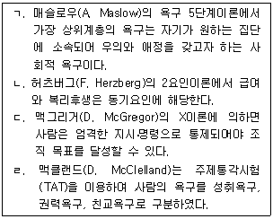
- ㄱ, ㄴ
- ㄱ, ㄹ
- ㄷ, ㄹ
- ㄱ, ㄴ, ㄷ
- ㄴ, ㄷ, ㄹ
(정답률: 알수없음)
55. 리더십(leadership)에 관한 설명으로 옳은 것은?
- 리더십 행동이론에서 리더의 행동은 상황이나 조건에 의해 결정된다고 본다.
- 리더십 특성이론에서 좋은 리더는 리더십 행동에 대한 훈련에 의해 육성될 수 있다고 본다.
- 리더십 상황이론에서 리더십은 리더와 부하 직원들 간의 상호작용에 따라 달라질 수 있다고 본다.
- 헤드십(headship)은 조직 구성원에 의해 선출된 관리자가 발휘하기 쉬운 리더십을 의미한다.
- 헤드십은 최고경영자의 민주적인 리더십을 의미한다.
(정답률: 알수없음)
56. 수요예측 방법에 관한 설명으로 옳은 것은?
- 델파이 방법은 일반 소비자를 대상으로 하는 정량적 수요예측 방법이다.
- 이동평균법은 과거 수요예측치의 평균으로 예측한다.
- 시계열분석법의 변동요인에 추세(trend)는 포함되지 않는다.
- 단순회귀분석법에서 수요량 예측은 최대자승법을 이용한다.
- 지수평활법은 과거 실제 수요량과 예측치 간의 오차에 대해 지수적 가중치를 반영해 예측한다.
(정답률: 알수없음)
57. 재고관리에 관한 설명으로 옳지 않은 것은?
- 경제적주문량(EOQ) 모형에서 재고유지비용은 주문량에 비례한다.
- 신문판매원 문제(newsboy problem)는 확정적 재고모형에 해당한다.
- 고정주문량모형은 재고수준이 미리 정해진 재주문점에 도달할 경우 일정량을 주문하는 방식이다.
- ABC 재고관리는 재고의 품목 수와 재고 금액에 따라 중요도를 결정하고 재고관리를 차별적으로 적용하는 기법이다.
- 재고로 인한 금융비용, 창고 보관료, 자재 취급비용, 보험료는 재고유지비용에 해당한다.
(정답률: 알수없음)
58. 품질경영기법에 관한 설명으로 옳지 않은 것은?
- SERVQUAL 모형은 서비스 품질수준을 측정하고 평가하는데 이용될 수 있다.
- TQM은 고객의 입장에서 품질을 정의하고 조직 내의 모든 구성원이 참여하여 품질을 향상하고자 하는 기법이다.
- HACCP은 식품의 품질 및 위생을 생산부터 유통단계를 거쳐 최종 소비될 때까지 합리적이고 철저하게 관리하기 위하여 도입되었다.
- 6시그마 기법에서는 품질특성치가 허용한계에서 멀어질수록 품질비용이 증가하는 손실함수 개념을 도입하고 있다.
- ISO 9000 시리즈는 표준화된 품질의 필요성을 인식하여 제정되었으며 제3자(인증기관)가 심사하여 인증하는 제도이다.
(정답률: 알수없음)
59. 식음료 제조업체의 공급망관리팀 팀장인 홍길동은 유통단계에서 최종 소비자의 주문량 변동이 소매상, 도매상, 제조업체로 갈수록 증폭되는 현상을 발견하였다. 이에 관한 설명으로 옳지 않은 것은?
- 공급사슬 상류로 갈수록 주문의 변동이 증폭되는 현상을 채찍효과(bullwhip effect)라고 한다.
- 유통업체의 할인 이벤트 등으로 가격 변동이 클 경우 주문량 변동이 감소할 것이다.
- 제조업체와 유통업체의 협력적 수요예측시스템은 주문량 변동이 감소하는데 기여할 것이다.
- 공급사슬의 정보공유가 지연될수록 주문량 변동은 증가할 것이다.
- 공급사슬의 리드타임(lead time)이 길수록 주문량 변동은 증가할 것이다.
(정답률: 64%)
60. 스트레스의 작용과 대응에 관한 설명으로 옳지 않은 것은?
- A유형이 B유형 성격의 사람에 비해 스트레스에 더 취약하다.
- Selye가 구분한 스트레스 3단계 중에서 2단계는 저항단계이다.
- 스트레스 관련 정보수집, 시간관리, 구체적 목표의 수립은 문제중심적 대처 방법이다.
- 자신의 사건을 예측할 수 있고, 통제 가능하다고 지각하면 스트레스를 덜 받는다.
- 긴장(각성) 수준이 높을수록 수행 수준은 선형적으로 감소한다.
(정답률: 알수없음)
61. 김부장은 직원의 직무수행을 평가하기 위해 평정척도를 이용하였다. 금년부터는 평정오류를 줄이기 위한 방법으로 '종업원 비교법'을 도입하고자 한다. 이때 제거 가능한 오류(a)와 여전히 존재하는 오류(b)를 옳게 짝지은 것은?
- a: 후광오류, b: 중앙집중오류
- a: 후광오류, b: 관대화오류
- a: 중앙집중오류, b: 관대화오류
- a: 관대화오류, b: 중앙집중오류
- a: 중앙집중오류, b: 후광오류
(정답률: 알수없음)
62. 인사 담당자인 김부장은 신입사원 채용을 위해 적절한 심리검사를 활용 하고자 한다. 심리검사에 관한 설명으로 옳지 않은 것은?
- 다른 조건이 모두 동일하다면 검사의 문항 수는 내적 일관성의 정도에 영향을 미치지 않는다.
- 반분 신뢰도(split-half reliability)는 검사의 내적 일관성 정도를 보여주는 지표이다.
- 안면 타당도(face validity)는 검사문항들이 외관상 특정 검사의 문항으로 적절하게 보이는 정도를 의미한다.
- 준거 타당도(criterion validity)에는 동시 타당도(concurrent validity)와 예측타당도(predictive validity)가 있다.
- 동형 검사 신뢰도(equivalent-form reliability)는 동일한 구성개념을 측정하는 두 독립적인 검사를 하나의 집단에 실시하여 측정한다.
(정답률: 알수없음)
63. 다음에 설명하는 용어는?
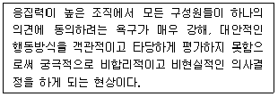
- 집단사고(groupthink)
- 사회적 태만(social loafing)
- 집단극화(group polarization)
- 사회적 촉진(social facilitation)
- 남만큼만 하기 효과(sucker effect)
(정답률: 알수없음)
64. 용접공이 작업 중에 보호안경을 쓰지 않으면 시력손상을 입는 산업재해가 발생한다. 용접공의 행동특성을 ABC행동이론(선행사건, 행동, 결과)에 근거하여 기술한 내용으로 옳은 것을 모두 고른 것은?(문제 오류로 실제 시험에서는 전항 정답 처리 되었습니다. 여기서는 1 번을 누르면 정답 처리 됩니다.)
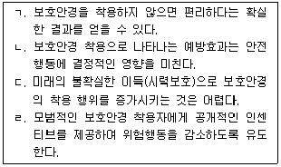
- ㄱ, ㄷ
- ㄴ, ㄹ
- ㄱ, ㄷ, ㄹ
- ㄴ, ㄷ, ㄹ
- ㄱ, ㄴ, ㄷ, ㄹ
(정답률: 알수없음)
65. 휴먼에러 발생 원인을 설명하는 모델 중, 주로 익숙하지 않은 문제를 해결할 때 사용하는 모델이며 지름길을 사용하지 않고 상황파악, 정보수집, 의사결정, 실행의 모든 단계를 순차적으로 실행하는 방법은?
- 위반행동 모델(violation behavior model)
- 숙련기반행동 모델(skill-based behavior model)
- 규칙기반행동 모델(rule-based behavior model)
- 지식기반행동 모델(knowledge-based behavior model)
- 일반화 에러 모형(generic error modeling system)
(정답률: 알수없음)
66. 소음의 특성과 청력손실에 관한 설명으로 옳지 않은 것은?
- 0 dB 청력수준은 20대 정상 청력을 근거로 산출된 최소역치수준이다.
- 소음성 난청은 달팽이관의 유모세포 손상에 따른 영구적 청력손실이다.
- 소음성 난청은 주로 1,000 Hz 주변의 청력손실로부터 시작된다.
- 소음작업이란 1일 8시간 작업을 기준으로 85 dBA 이상의 소음이 발생하는 작업이다.
- 중이염 등으로 고막이나 이소골이 손상된 경우 기도와 골도 청력에 차이가 발생할 수 있다.
(정답률: 알수없음)
67. 인간의 정보처리과정에 관한 설명으로 옳은 것을 모두 고른 것은?
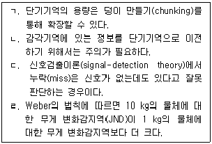
- ㄴ, ㄷ
- ㄱ, ㄴ, ㄹ
- ㄱ, ㄷ, ㄹ
- ㄴ, ㄷ, ㄹ
- ㄱ, ㄴ, ㄷ, ㄹ
(정답률: 알수없음)
68. 어떤 가설을 받아들이고 나면 다른 가능성은 검토하지도 않고 그 가설을 지지하는 증거만을 탐색해서 받아들이는 현상에 해당하는 것은?
- 대표성 어림법(representativeness heuristic)
- 가용성 어림법(availability heuristic)
- 과잉확신(overconfidence)
- 확증 편향(confirmation bias)
- 사후확신 편향(hindsight bias)
(정답률: 알수없음)
69. 안전율 결정인자가 아닌 것은?
- 기계설비의 제작비용
- 응력계산의 정확도
- 다듬질면의 거칠기
- 재료의 균질성에 대한 신뢰도
- 불연속 부분의 존재
(정답률: 알수없음)
70. 인체의 전기저항에 관한 설명으로 옳은 것을 모두 고른 것은?
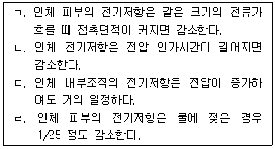
- ㄱ, ㄴ
- ㄴ, ㄷ
- ㄱ, ㄴ, ㄷ
- ㄴ, ㄷ, ㄹ
- ㄱ, ㄴ, ㄷ, ㄹ
(정답률: 40%)
71. 하인리히(Heinrich)의 사고예방대책 기본원리 5단계에서 재해조사 분석, 안전성 진단 및 작업환경 측정은 몇 단계에서 실시하는가?
- 1단계
- 2단계
- 3단계
- 4단계
- 5단계
(정답률: 알수없음)
72. 근로자 개인보호구 구비조건에 관한 설명으로 옳은 것을 모두 고른 것은?
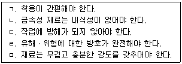
- ㄱ, ㄴ, ㄷ
- ㄱ, ㄷ, ㄹ
- ㄴ, ㄷ, ㄹ
- ㄴ, ㄹ, ㅁ
- ㄷ, ㄹ, ㅁ
(정답률: 알수없음)
73. 위험성 추정 시 산업재해 유형별 구분으로 옳지 않은 것은?
- 화학물질의 물리적 효과에 의한 것
- 물리적 인자의 유해성에 의한 것
- 자연환경의 물리적 효과에 의한 것
- 화학물질의 유해성에 의한 것
- 생물학적 요인에 의한 것
(정답률: 알수없음)
74. 위험성 평가기법의 하나인 FTA(Fault Tree Analysis)에서 사용되는 기호의 명칭으로 옳지 않은 것은?
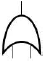
OR 게이트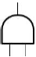
AND 게이트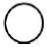
기본 사상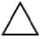
생략 사상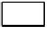
중간 또는 정상 사상
(정답률: 알수없음)
75. 안전보건경영시스템(KOSHA 18001) 인증에서 안전보건경영 관계자 면담시 중급 관리자가 숙지해야 할 사항으로 명시되지 않은 것은?
- 안전보건 경영방침을 수행하기 위한 구체적 추진계획
- 안전보건경영시스템의 운영절차와 예상효과
- 해당 공정의 위험성 평가방법과 내용
- 최신 기술 자료의 보관장소와 관리방법
- 개인보호구 착용기준과 착용방법
(정답률: 알수없음)